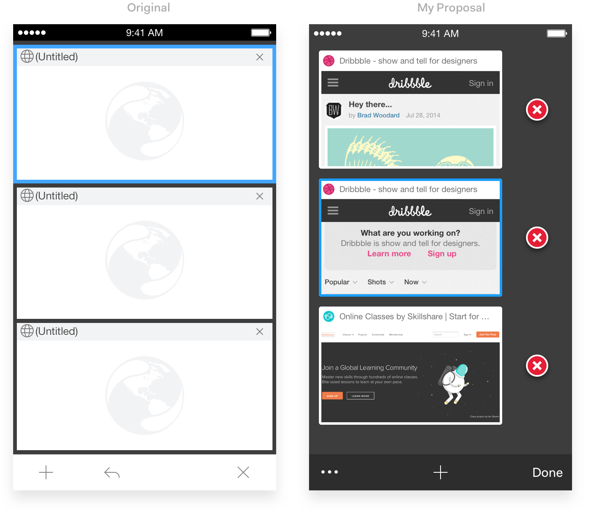

Mercury Browser was the first project that I took full responsibility for shortly after my career began. And it lasted for about three years. Honestly, I did and still do enjoy those time spent on it, it was quite a memory for sure.
Sadly, as it had been developed for nearly five years, and until the end of 2015, yet we failed to make sustained profits, so the project was decided to be put on hold indefinitely.
Here, I’m gonna talk about some of the plenty design-related problems I've encountered the whole time, and how I solved them.
Visual consistency
Before I got my hand on it, its visual consistency kinda fell apart, as it got tons of features and each one varied slightly. So firstly, what I did was to unify its visual experience. I guess as a visual designer, it’s like an instinct that makes me wanna make changes to it whenever I see the visual chaos.

User experience
When the visual part was done, it came to the user experience area which was not so terrible, though. It worked, but it could use some optimization like enhancing feedbacks and adding empty status, etc.
Take the switcher page for an example. The existing problems are: 1. Normally you need to try several times to close a webpage as the target is so tiny to touch and find; 2. It can only display three pages on one screen and looks quite crowded; 3. Icons on the toolbar can't speak for themselves very well - what does that back-icon mean? And the X icon just looks like a bigger delete icon, does it mean closing all pages or going back to the homepage? It confuses users.

Wrapping up
Oh man, as I'm writing here, all the memories just crowd in - I was so passionate about this app back then that every day I got off work, during the time home, I was so used to open the app and played with it trying to find out if there was anything I could do to make it better, and if I did find something worth optimizing, what I did was to stay up late and got it done, and the next morning, I brought it to the team to see any possibilities to implement it. That feeling is good, I miss it. 😊